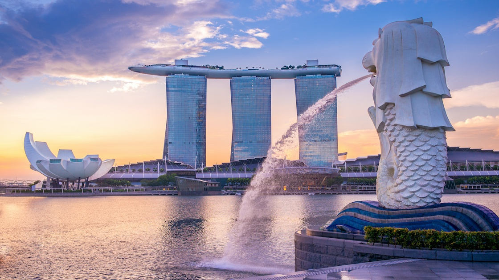

Locations

South Korea

Japan
Thailand
HongKong
Malaysia

Singapore
Welcome to East Vagabond, your premier destination for connecting freelance tour guides with adventurous tourists exploring the vibrant and diverse landscapes of Asia. Whether you're a traveler seeking to delve into the rich cultural tapestry of Asian countries or a passionate tour guide eager to share your local knowledge, East Vagabond is here to bridge the gap.
South Korea
Japan
Thailand
HongKong
Malaysia
Singapore

Name: Ryan
Ryan is South Korean who has been working at hotels in different locations in Korea. Ryan has great knowledge about different locations in South Korea. Ryan is the one if you want to visit from city to rural area of South Korea.
Name: Kamado Tanjiro
Tanjiro is a teacher in Japan. He gained his knowledge about great tourism spots in Japan through school field trip. Tanjiro will take you to hidden spots to visit while you are in Japan!
Name: Poo Bao
Poo is professional tour guide who has over 7 years of experience in the field. Poo can take you from south to north of China. Poo can drive you through your tour to provide convenience experience during your time in China.
rating: 9.6 / 10
Visited Country: South Korea
Guide: Ryan
Comment: It was my first visit to South Korea and had great time and experience with East Vagabond. Ryan, who guided my tour through my trip took me to every hidden corner of South Korea.

rating: 6.8 / 10
Visited Country: China
Guide: Poo Bao
Comment: It was great to have exotic, authentic Chinese food and visit some places but air polution in China have me hard time through my trip. Poo was very friendly and nice guide, tried his best to keep me entertained through my trip.

rating: 9.9 / 10
Visited Country: Japan
Guide: Tanjiro
Comment: My dream has come true. I have been big fan of Japanese anime and this trip was designed to visit anime studios in Japan and real locations described in some animes. The best guide Tanjiro!